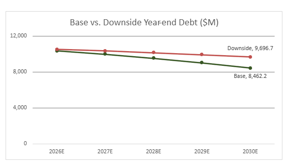
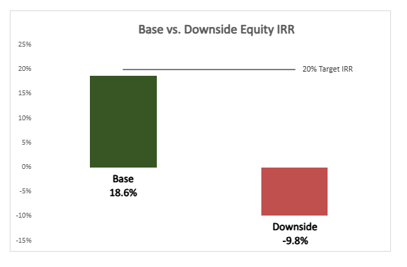
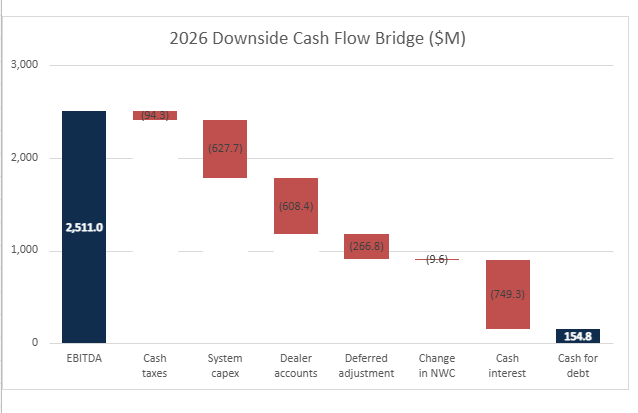

ADT downside underwriting
A five-year hypothetical leveraged acquisition. Connecting operating performance, cash conversion, debt repayment, and sponsor equity returns.
Investment conclusion: pass at modeled terms
Base-case returns miss the 20% IRR target. Weaker growth, margins, and exit valuation produce a loss of equity capital in the downside. A lower purchase price or revised financing structure warrants further testing.
Debt repayment

The downside leaves $1,234.5 million more debt at exit.
Equity outcomes

Where the repayment cash comes from

Cash taxes include the modeled interest tax shield. The ending balance is before mandatory debt amortization. Customer-account spending and deferred adjustments materially reduce cash conversion.
Explore exit valuation sensitivity
Adjust downside exit EBITDA and the sale multiple. Exit debt and cash stay fixed, matching the Excel sensitivity table.
Sensitivity result
Annualized equity IRR| Equity MOIC | |
| Exit EBITDA ($M) | |
| Sponsor exit proceeds ($M) |
Five-year holding period, no interim distributions, and equity proceeds floored at zero. This tests sale valuation; it does not recalculate operating cash flow or debt paydown.
Method and limitations
What the model contains
Historical inputs, operating forecasts, transaction sources and uses, debt schedules, returns, parallel base/downside calculations, exit sensitivity, and an investment dashboard. Source references are retained inside the workbook.
Key transaction assumptions
5.5x entry EV/EBITDA; 4.0x initial leverage; 7.0% blended interest; 100% excess-cash sweep. Base: 5% growth, 52% EBITDA margin, 5.5x exit. Downside: 2% growth, 48% margin, 4.5x exit.
Definitions and important limits
EBITDA is operating income plus depreciation and amortization, rather than company-reported Adjusted EBITDA. Tax, working capital, financing, and cash-sweep assumptions are simplified. Base minimum DSCR is approximately 1.24698x and is below the 1.25x threshold before rounding. This is an educational hypothetical transaction, not a company forecast.
Tools and project process
Excel financial modeling, scenario analysis, debt rollforwards, cash reconciliation, and investment memo writing. AI assistance supported troubleshooting, presentation, and packaging. Interactive results use the packaged model's cached outputs.